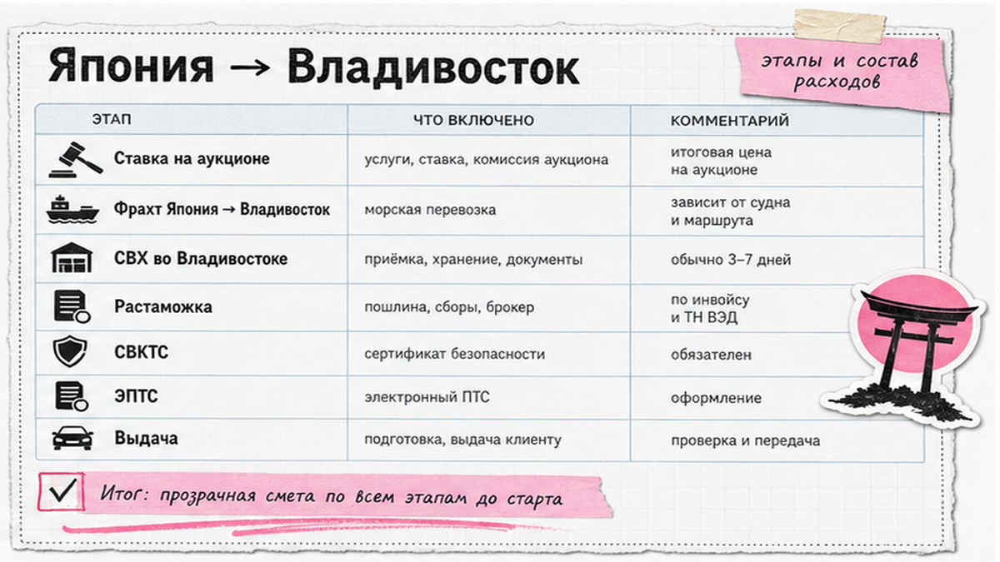
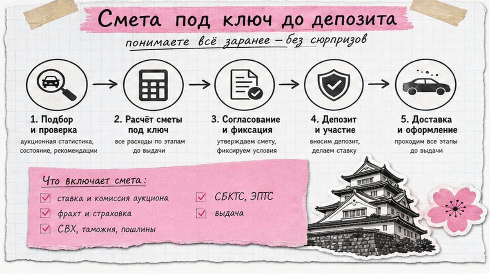
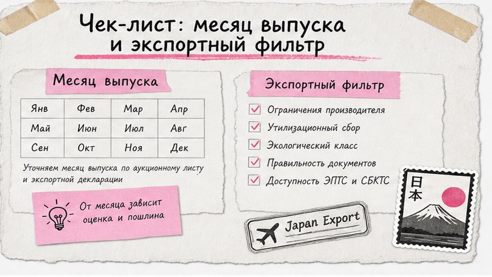

Андрей из Новосибирска увидел Camry "от 1,2 млн", внёс депозит без полной сметы и без проверки месяца выпуска. Лот выиграли – а на СВХ во Владивостоке год оказался "непроходным": утиль и пошлина съели весь запас. Типичная боль новичка: кажется, выбрал красивый лот – и через две недели катаешься. Ниже – чек-лист заказа авто из Японии в 2026: от ставки до ключей и список вопросов менеджеру до первой ставки.
Коротко: На японский аукцион частника не пускают – только через фирму с доступом. Цена лота в иенах – не смета "под ключ". До депозита нужны договор, полный расчёт, месяц выпуска и проверка экспортных ограничений. Дальше: выкуп → фрахт → СВХ Владивосток → растаможка → СБКТС → ЭПТС → выдача. ЭРА-ГЛОНАСС для физлиц с 1 апреля 2026 по позиции Минпромторга обязательной не сделали – уточняйте схему на дату сделки.
Мы в Авто-Сейлс во Владивостоке видим одну ловушку снова и снова: человек влюбляется в фото, а СВХ, СБКТС и ЭПТС встречает, когда деньги уже ушли. Этот гайд – спокойный разбор без романтики про Японию: что сделать сегодня, чтобы не повторить историю Андрея.

Японский автоаукцион (USS, TAA, JU, HAA и другие) – закрытый клуб дилеров. Вы подаёте заявку посреднику, вносите депозит, он ставит за вас. Выиграли – оплачиваете инвойс, машину грузят на судно, она едет во Владивосток на СВХ (склад временного хранения – "парковка" таможни). Дальше платежи, лаборатория и цифровой паспорт.
Схема под ключ:
Фильтр и смета → Аукцион и ставка → Инвойс и оплата → Фрахт → Владивосток / СВХ → Растаможка → СБКТС → ЭПТС → Выдача и учёт в ГИБДД
Сделайте: держите всю цепочку перед глазами, а не только экран лота. Не делайте: не считайте, что "купил на аукционе" уже равно "можно ехать домой".

Боль простая: цена в иенах красивая, а на таможне всплывает другая сумма. На практике конечная цена = лот + аукционный сбор + доставка по Японии + фрахт + страховка + таможня и утильсбор + СВХ + СБКТС/ЭПТС + доставка по РФ + услуги. Готовые суммы пошлин в статье не публикуем: считать нужно под конкретный лот.
| Статья расходов | Что это простыми словами | Когда спрашивать |
|---|---|---|
| Цена лота | Сколько дали на аукционе | До ставки (лимит) |
| Япония + фрахт | Сборы, доставка до порта, море | До депозита |
| СВХ + таможня/утиль | Склад и платежи государству | До депозита (оценка) |
| СБКТС + ЭПТС | Лаборатория и электронный ПТС | До депозита в смете |
| Доставка по РФ + услуги | Автовоз/ж/д и работа импортёра | До депозита |
Например, зафиксируйте потолок "до номеров" и попросите разложить смету по строкам. Актуальный расчёт – в каталоге avto-sales125.ru, без форм на этой странице.
Сделайте: сравнивайте только сметы "под ключ". Не делайте: не вносите депозит без полного списка статей расходов. Избегайте "красивой" цены лота без разбивки.

Типичная ошибка – смотреть только оценку и фото. Возрастные корзины влияют на пошлину: в 2026 переходные ориентиры для "трёх" и "пяти" лет часто связывают с 2023 и 2021, а возраст считают на дату подачи на таможню. В листе поле Year нередко показывает год продажи, не месяц выпуска.
С 9 августа 2023 Япония ограничила экспорт в РФ ряда категорий: часть ДВС больше 1900 см³, электромобили, гибриды plug-in, отдельные вэны и универсалы. Лот может быть красивым и всё равно непроходным на вывоз.
Сделайте: отсейте сомнительный лот до торгов. Не делайте: не надейтесь, что "на СВХ разберёмся".
Аукционный лист – карточка осмотра: схема повреждений, пробег, комментарии инспектора. Оценка помогает отфильтровать мусор, но не заменяет чтение схемы. В реальном проекте люди ставят по эмоции, увидев "4.5", и пропускают важную пометку в мелком комментарии.
Сделайте: читайте схему и текст инспектора, сохраняйте скрины, просите перевод спорных пометок. Не делайте: не ставьте "вслепую" по фото салона и одной цифре оценки.
Депозит – залог под торги, не финальная оплата машины. Сначала договор: кто ставит, кто отвечает за срыв, как возвращается депозит, какой канал оплаты инвойса после выкупа. После выкупа сохраните квитанции: они нужны брокеру вместе с Export Certificate, Bill of Lading (коносамент – "паспорт" груза), страховкой и договором.
Сделайте: депозит только после договора и сметы. Не делайте: не поднимайте лимит из азарта и не платите без понятного канала.
СВХ – склад, где машина ждёт таможню. Растаможка – платежи (часто авансом до выпуска) и оформление ввоза. СБКТС – свидетельство безопасности конструкции от лаборатории. ЭПТС – электронный ПТС; без него нормально поставить на учёт и оформить ОСАГО сложно. Ориентир срока после оплаты по гайдам 2026: примерно 3–6 недель, но рейс и таможня двигают календарь. Порядок: таможня → СБКТС → ЭПТС → ГИБДД.
Сделайте: заранее отдайте брокеру пакет документов и не путайте статьи расходов. Не делайте: не требуйте "ключи завтра", пока ЭПТС не оформлен.
Сюрприз 2026: часть гайдов всё ещё пишет, будто кнопка ЭРА-ГЛОНАСС обязательна любому ввезённому авто. По сообщениям Минпромторга (март 2026) обязательное оснащение для физлиц с 1 апреля 2026 не вводится и перенесено. У юрлиц и ИП требования обычно жёстче. Уточняйте статус на дату сделки, иначе в смете появится лишняя или пропущенная строка.
Сделайте: спросите отдельной строкой, нужна ли ЭРА вам как физлицу. Не делайте: не копируйте чеклист годичной давности.
Критерий успеха: до ставки есть смета под ключ, договор, проверенный лот и лимит ставки; на выдаче сверили VIN, есть ЭПТС и комплект для ГИБДД. Результат для новичка – вы сможете пройти заказ осознанно, а не "купить фото".
Нужен разбор модели – напишите в Telegram @avtosales125 или откройте каталог Авто-Сейлс. Форм на странице нет.
Сделайте: идите по чеклисту сверху вниз. Не делайте: не пропускайте пункты "потом наверстаем".
Живой расчёт под бюджет – в каталоге avto-sales125.ru: подбор из Японии без форм на блоге.
Материал проверен: Редакция Авто-Сейлс (эксперты по авто под заказ из Японии, Кореи и Китая).
Достоверность: факты сверены с открытыми источниками (Дром FAQ по японским аукционам, материалы о позиции Минпромторга по ЭРА-ГЛОНАСС, март 2026) и практикой сопровождения заказов через Владивосток; актуальные расчёты – в каталоге.
На дилерский аукцион частника не пускают. Действуйте через компанию с доступом: заявка, депозит, ставка, выкуп. "Серый" путь новичка почти всегда заканчивается потерей контроля над документами.
Считайте минимум девять точек: фильтр и смета, ставка, оплата, фрахт, СВХ, растаможка, СБКТС, ЭПТС, выдача. Поставьте их списком – так проще понять, где застряли деньги или бумаги.
В Японии ядро – аукционный лист и ставка через брокера с доступом. В Корее чаще Encar и отчёты истории, в Китае – свой пакет документов. Сравнивайте прозрачность проверки до оплаты и смету до вашего города.
Договор, смету под ключ, полный лист, месяц выпуска, экспортные ограничения и канал оплаты после выкупа. Нет пакета – нет перевода. Детали лота удобно уточнить в Telegram @avtosales125.
СВХ – склад таможни во Владивостоке. СБКТС – заключение лаборатории о безопасности. ЭПТС – электронный ПТС для учёта. Спрашивайте статус каждой позиции у менеджера отдельно.
Не копируйте старые гайды. Для физлиц обязательность с 1 апреля 2026 по заявлению Минпромторга не вводилась. Перед сделкой спросите норму под вашу схему и зафиксируйте ответ в смете.
Не из статичной таблицы в статье. Запросите персональный расчёт под год, объём и мощность в каталоге Авто-Сейлс или у менеджера – так сравниваете сопоставимые сметы.